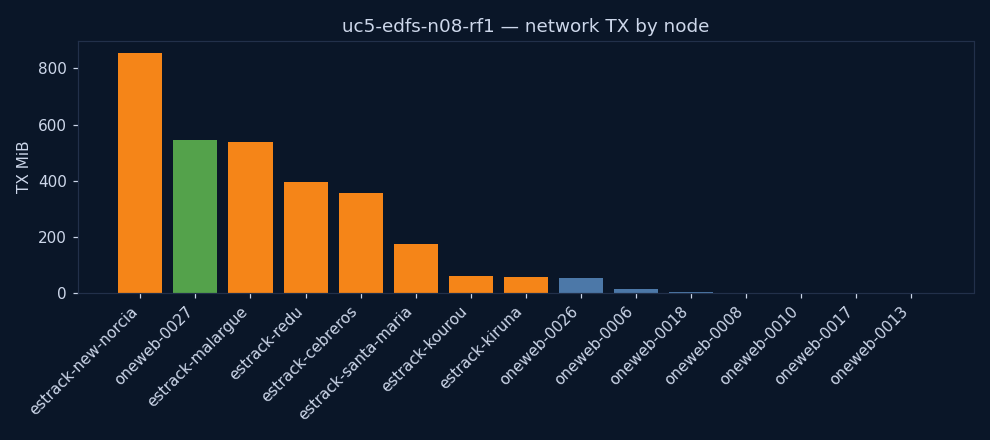
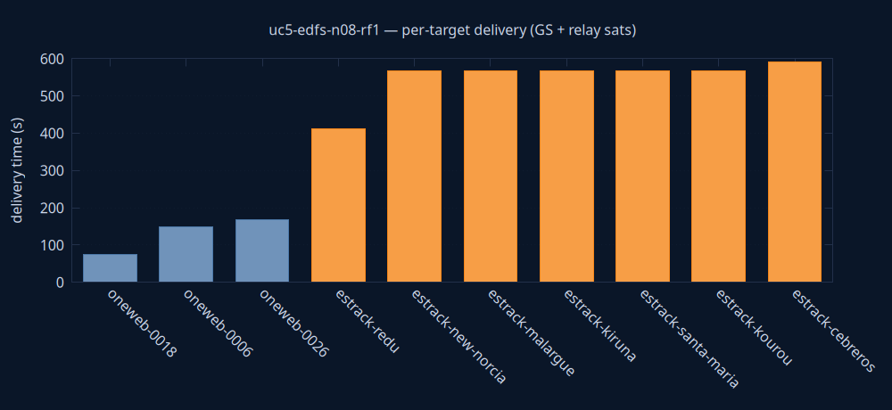

uc5-edfs-n08-rf1
edfs
Success
| parameter | value | unit | description |
|---|---|---|---|
| engine | edfs | — | Storage/transport engine under test (edfs or tus) |
| sat_count | 8 | sats | Number of satellites in the constellation |
| RF | 1 | copies | EDFS replication factor (n/a for TUS) |
| KPI | value | unit | description |
|---|---|---|---|
| state | Success | — | Terminal experiment state (Success/TimedOut/Failure) |
| exec_date | 2026-06-10 00:45 UTC | UTC | Wall-clock date/time the experiment was launched (CR creationTimestamp) |
| duration | 14m 6s | — | Experiment duration on the simulation clock (simulationStartTime → experimentTime) |
| sim_start | 2026-05-16 23:59 UTC | UTC | Simulation clock at experiment start (simulationStartTime) |
| sim_end | 2026-05-17 00:13 UTC | UTC | Simulation clock when the experiment finished (experimentTime) |
| produced | 5 | files | Files produced by the producer agent(s) |
| files_to_GS | 1 | count | Distinct produced files that reached at least one ground station |
| delivery_success_rate | 100 | % | Distinct files reaching ≥1 GS as a percentage of files produced (UC2/UC5 primary KPI) |
| all_delivered | no | — | Whether every produced file reached a ground station |
| first_GS_delivery_s | 411 | s | Time from sim start until the first produced file reached any ground station |
| last_GS_delivery_s | 411 | s | Time from sim start until the last produced file reached a ground station (all-delivered time) |
| GS_reached | 7 | count | Ground stations that received the file (from received_total — independent of the delivery-time metric) |
| distinct_receivers | 10 | count | Distinct nodes that received a file (GS + relays) |
| TX_MiB | 3058 | MiB | Total network bytes transmitted, all nodes |
| peak_cpu_m | 340 | millicores | Peak CPU across all containers |
| peak_mem_MiB | 172 | MiB | Peak memory across all containers |
| notes | 4 of 5 file(s) undelivered | — | Data-quality flags for this run (missing metrics, undelivered files) |
Node colours are consistent across every chart and the graph: ■ ground station · ■ relay satellite · ■ producer.
from → to per node = where it first acquired the file by the selected time. Grouped per file; 0-byte control messages omitted; times bucketed to ~2 s for cross-node clock skew. Timeline spans the whole experiment (0 = simulation start). Delivery completeness is the File deliveries table below. from → to = bytes transferred within the trailing window ending at the selected time (instantaneous flow). Edge colour = bandwidth (bits/s, blue = low → red = high); label shows the rate. Play to watch where traffic moves moment-to-moment. Timeline is the simulation clock (0 = simulation start), shared with the charts above.| file | received by | delivery (s from creation) | time from start | #fsNodes with file |
|---|---|---|---|---|
| oneweb-0027_0 | oneweb-0027 producer | t0 | 12s from start ← t0 | 1 |
| oneweb-0027_0 | oneweb-0018 | t0 + 143.0s | 2m 35s from start | 2 |
| oneweb-0027_0 | oneweb-0026 | t0 + 153.7s | 2m 45s from start | 3 |
| oneweb-0027_0 | oneweb-0006 | t0 + 156.0s | 2m 48s from start | 4 |
| oneweb-0027_0 | estrack-new-norcia GS | t0 + 788.1s | 13m 20s from start | 5 |
| oneweb-0027_0 | estrack-kourou GS | t0 + 788.4s | 13m 20s from start | 6 |
| oneweb-0027_0 | estrack-malargue GS | t0 + 788.5s | 13m 20s from start | 7 |
| oneweb-0027_0 | estrack-santa-maria GS | t0 + 788.5s | 13m 20s from start | 8 |
| oneweb-0027_0 | estrack-cebreros GS | t0 + 788.5s | 13m 20s from start | 9 |
| oneweb-0027_0 | estrack-kiruna GS | t0 + 788.5s | 13m 20s from start | 10 |
| oneweb-0027_1 | oneweb-0027 producer | t0 | 2m 13s from start ← t0 | 1 |
| oneweb-0027_1 | oneweb-0018 | t0 + 65.3s | 3m 18s from start | 2 |
| oneweb-0027_1 | oneweb-0026 | t0 + 134.6s | 4m 27s from start | 3 |
| oneweb-0027_1 | oneweb-0006 | t0 + 143.3s | 4m 36s from start | 4 |
| oneweb-0027_1 | estrack-new-norcia GS | t0 + 677.2s | 13m 30s from start | 5 |
| oneweb-0027_1 | estrack-malargue GS | t0 + 677.3s | 13m 30s from start | 6 |
| oneweb-0027_1 | estrack-santa-maria GS | t0 + 677.5s | 13m 30s from start | 7 |
| oneweb-0027_1 | estrack-cebreros GS | t0 + 677.5s | 13m 30s from start | 8 |
| oneweb-0027_1 | estrack-kiruna GS | t0 + 677.5s | 13m 30s from start | 9 |
| oneweb-0027_1 | estrack-kourou GS | t0 + 677.6s | 13m 30s from start | 10 |
| oneweb-0027_2 | oneweb-0027 producer | t0 | 4m 14s from start ← t0 | 1 |
| oneweb-0027_2 | oneweb-0018 | t0 + 45.4s | 4m 59s from start | 2 |
| oneweb-0027_2 | oneweb-0026 | t0 + 166.4s | 7m 0s from start | 3 |
| oneweb-0027_2 | estrack-new-norcia GS | t0 + 551.4s | 13m 25s from start | 4 |
| oneweb-0027_2 | estrack-kourou GS | t0 + 551.5s | 13m 25s from start | 5 |
| oneweb-0027_2 | estrack-malargue GS | t0 + 551.6s | 13m 25s from start | 6 |
| oneweb-0027_2 | estrack-santa-maria GS | t0 + 551.6s | 13m 25s from start | 7 |
| oneweb-0027_2 | estrack-kiruna GS | t0 + 551.6s | 13m 25s from start | 8 |
| oneweb-0027_2 | estrack-cebreros GS | t0 + 551.7s | 13m 25s from start | 9 |
| oneweb-0027_3 | oneweb-0027 producer | t0 | 6m 14s from start ← t0 | 1 |
| oneweb-0027_3 | oneweb-0018 | t0 + 47.1s | 7m 2s from start | 2 |
| oneweb-0027_3 | oneweb-0026 | t0 + 184.1s | 9m 18s from start | 3 |
| oneweb-0027_3 | estrack-new-norcia GS | t0 + 473.6s | 14m 8s from start | 4 |
| oneweb-0027_3 | estrack-malargue GS | t0 + 474.1s | 14m 8s from start | 5 |
| oneweb-0027_3 | estrack-kiruna GS | t0 + 474.1s | 14m 8s from start | 6 |
| oneweb-0027_3 | estrack-kourou GS | t0 + 474.1s | 14m 8s from start | 7 |
| oneweb-0027_3 | estrack-redu GS | t0 + 474.2s | 14m 9s from start | 8 |
| oneweb-0027_3 | estrack-santa-maria GS | t0 + 474.2s | 14m 9s from start | 9 |
| oneweb-0027_4 | oneweb-0027 producer | t0 | 8m 15s from start ← t0 | 1 |
| oneweb-0027_4 | oneweb-0018 | t0 + 72.0s | 9m 27s from start | 2 |
| oneweb-0027_4 | oneweb-0026 | t0 + 196.9s | 11m 32s from start | 3 |
| oneweb-0027_4 | estrack-new-norcia GS | t0 + 348.7s | 14m 4s from start | 4 |
| oneweb-0027_4 | estrack-redu GS | t0 + 348.8s | 14m 4s from start | 5 |
| oneweb-0027_4 | estrack-malargue GS | t0 + 348.9s | 14m 4s from start | 6 |
| oneweb-0027_4 | estrack-santa-maria GS | t0 + 348.9s | 14m 4s from start | 7 |
| oneweb-0027_4 | estrack-kiruna GS | t0 + 348.9s | 14m 4s from start | 8 |
| oneweb-0027_4 | estrack-cebreros GS | t0 + 349.1s | 14m 4s from start | 9 |
| oneweb-0027_4 | estrack-kourou GS | t0 + 349.1s | 14m 4s from start | 10 |

